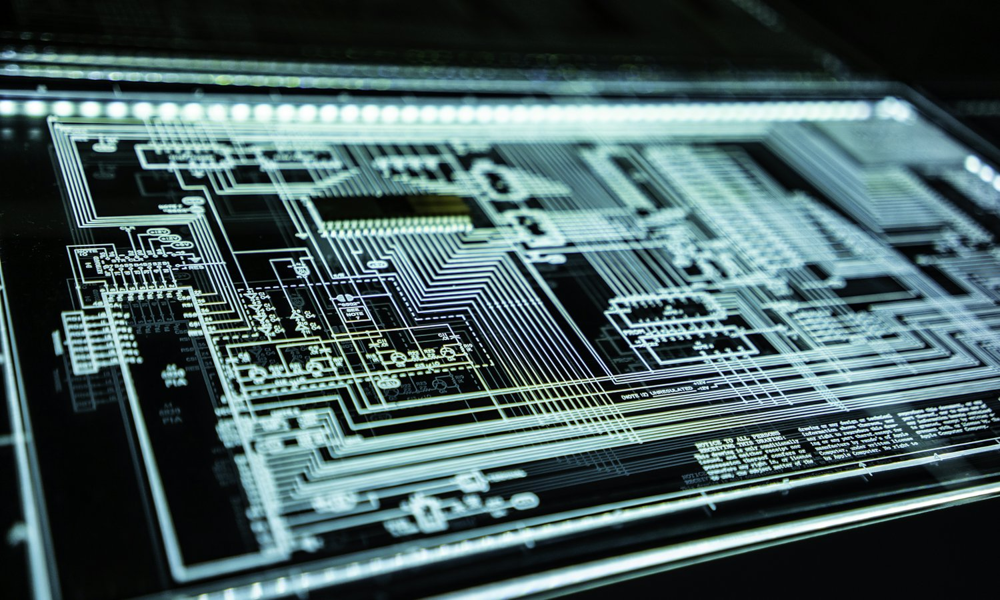

Enterprise Strategy & Transformation
- Multi-Year Roadmaps
- Technology Strategy
- Operating Model
- Strategy KPIs & Governance
Strategy & Transformation

Pulkit Garg
Senior Manager, Strategy & Initiatives, Transformation & Chief Operating Office
Featured Insights
Case Study 1 · Enterprise strategy
29 countries, one strategy
One strategy for a 10,000+ person technology function that the Board, the CEO and teams across 29 countries can all read the same way.
Read the case
Case Study 2 · AI strategy
US$10 Bn roadmap approved
Case Study 3 · Executive narrative
5-7 priorities, one storyline
Case Study 4 · Governance
6 annual Board cycles owned
Case Study 5 · People & culture
2,000+ employees in the redesign
How I work
Strategy lead and people manager. I run the strategy team for a global Technology & Operations function and work with the Group Head on materials for the CEO and the Board.
Translate top-down targets into a structured portfolio and operating model
Build executive narratives that stand up in governance and board settings
Drive adoption through simple, measurable change and enablement plans
Capabilities
What I'm known for, and what I bring on day one.
My Toolkit
Top-down value decomposition linking strategy to measurable outcomes
Value, risk, feasibility, and time-to-impact scoring framework
Situation-Complication-Question-Answer narrative structure
Formatted for committee review with clear asks and accountability
Behavioural + operational KPIs tracking real usage and value capture
AI agents and automations built in GitHub Copilot and VS Code to speed up market research, competitive analysis, and executive slide production
Impact
Five examples of the work. Pick one to read the detail.
The ChallengeA 10,000+ person Technology & Operations function needs one strategy that the Board, the CEO and teams across 29 countries can all read the same way.
Strategy lead and people manager, running the strategy team across direct and dotted-line reporting. I own the development of RBC's FY2030 Technology & Operations strategy, defining the five-pillar structure, the case for change and the multi-year roadmap for Board and CEO review.
Five pillars, the case for change, a target end-state and a multi-year operating roadmap
I hold the pen on the Board strategy deck, executive speaking notes and Q&A fact pack, defending every figure to its source through Group Executive reviews
Client-side owner working with Tier 1 strategy firms, translating their frameworks and benchmarks into RBC-specific positions and testing each claim before it enters executive material
A consolidated KPI framework with a named owner per pillar, outcome metrics over activity metrics, and the review cadence that keeps executive material defensible.
The detail of this work is confidential. I am happy to talk through the approach.
The ProblemAI ambition is easy; scaling adoption + value capture is hard.
Part of the core strategy team that helped define what RBC's publicly announced $700MM - $1BN AI value target looks like in practice. Contributed to shaping the strategy that led to the formation of a dedicated AI Group reporting directly to the CEO, supporting the transition of AI from experimentation to enterprise-scale execution across 100,000+ employees in 29 countries.
High-value, low-effort use cases deployed in 30-90 days
Cross-functional capabilities that compound over 6-12 months
Exploratory AI capabilities with high strategic upside
The FrameworkStrategy = 5-7 enterprise priorities with clear outcomes. Each priority maps to a measurable KPI, 3 linked initiatives, and clear ownership + timeline.
Built the executive narratives and board-ready materials that translate enterprise strategy into repeatable storylines for the CIO, CHRO, and senior leadership. Shaped the content and framing used in strategy updates, investor communications, and governance forums.
Today I do the same for the Group Head of Technology & Operations: converting leadership direction into precise copy for the CEO and the Board.
Goal, what changes, KPIs, decisions needed. Readable in 2 minutes.
One message per slide. What happened? Why does it matter? What do we do next?
Structured record of what was decided, traded off, and why.
The FocusHigh-profile board administration and governance work, ensuring leadership materials, committee processes, and reporting flows operate at the standard required for board-level oversight.
Closely involved in the governance operations for RBC's Human Resources Committee (HRC) and broader board administration. Coordinating materials with senior leaders, ensuring everything flows on schedule, and supporting the end-to-end process for committee reporting to the board. This includes oversight areas like compensation risk, cross-committee coordination (e.g., HRC + Risk Committee), and alignment with the Audit and Governance committees.
Led the office of the CHRO in a position of trust, owning six annual Board cycles and executive governance across 15+ Operating Committee members.
Coordinating and preparing materials for HRC review with senior leaders across multiple stakeholder groups
Ensuring committee reporting is structured to flow directly to board with consistent framing and escalation pathways
Supporting joint discussions across HRC, Risk, Audit, and Governance committees with aligned scope and accountability
The InsightStrategy initiatives fail when skills + enablement lag behind ambition.
Member of the core culture working group shaping RBC's vision, values, and workforce readiness strategy. Contributed to the blueprints that guide how 100,000+ employees develop skills, adopt new ways of working, and connect to the enterprise's strategic direction. This work underpins the public-facing commitments around skills development and inclusive opportunity.
Led HR operating-model and organization design across 2,000+ HR and marketing employees, including organization-wide restructuring, alongside talent, performance and HR transformation work.
5,584 employees upskilled through programs like Leap; 3M+ collective learning hours
72% of positions filled by internal candidates in 2024
Pre/post skill assessments + manager ratings across AI tool adoption
The same thinking now shapes workforce strategy for a global technology function: location strategy and hub growth, role mix and AI-driven reskilling.
90-Day Impact Plan
About
Strategy professional with 6 years at RBC after a Canadian Master's. Promoted 4 times in 4 years, from intern to Senior Manager.
Strategy lead and people manager for a 10,000+ person Technology & Operations function. FY2030 strategy, Board and executive communications, strategy KPIs and governance.
HR operating model and organization design, office of the CHRO and Board governance, talent, performance and HR transformation.
Co-developed RBC's enterprise AI strategy, the groundwork for the up to $1Bn AI value ambition later announced at Investor Day.
De facto product owner. Led delivery of a solution processing 1MM+ documents with 20+ cross-functional teams, improving operational efficiency by 33%.
Delivered a $5MM+ compliance solution and managed 7 work streams, including analytical training for 24,000+ employees.
Board strategy development for the Group Executive (CIO, CHRO & CMO). Strategy workshops, SLT forums & OC offsites.
25+ thought leadership publications on tech and banking trends. Competitive intel analysis, external benchmarking & innovation roadshows.
Supporting SVPs in defining key goals, priorities and integrated roadmaps. Town halls and comms events for ~600 employees.
RBC Conference / Cruise Award (top <1% of 98k+ employees globally). Digital Quarterly Performance Award (top 5%).
Top 2% in class. UNESCO Chair Fellowship, Dean's Scholarship & FOSS Award.
Top 3% in class. Merit Scholarship; AAFC Canada Delegate 2018.
Built With
From concept to deployment, this site was created entirely through conversational AI-assisted development using Claude Code, pushed to GitHub, and deployed via GitHub Pages.